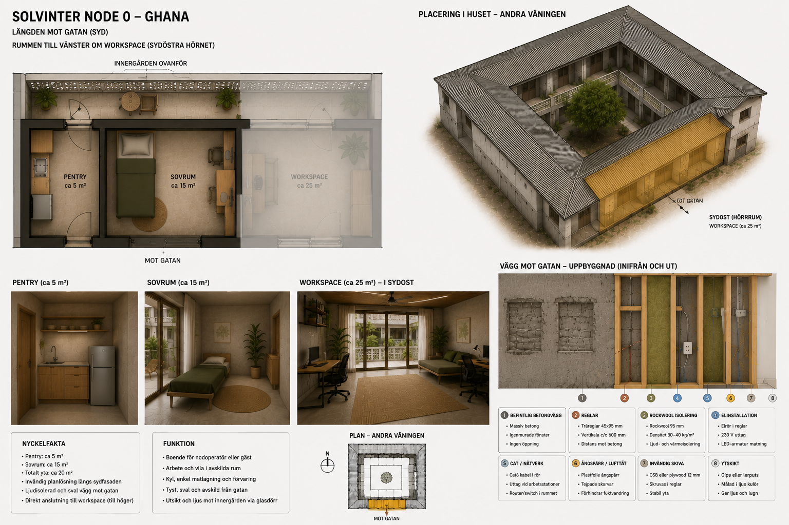

Living Space
The Living Space is a simple apartment designed to support people while they build and develop Solvinter Edge. It is not intended as luxury accommodation. Its purpose is to make long-term work practical, affordable and sustainable.

Purpose
Building a new node often requires weeks or months of continuous work. Providing a quiet place to sleep, prepare food and recover makes it possible to focus on the project rather than daily logistics.
The Living Space supports the Workspace. Together they form the first operational Solvinter node.
Design Principles
Simplicity
Small, practical and easy to maintain. Every square metre should serve a purpose.
Comfort
Air conditioning, natural light and good ventilation create an environment that supports health and recovery.
Function
The room should include a bed, desk, pentry, refrigerator and storage for daily living.
Calm
The atmosphere should encourage rest, reading and quiet conversation rather than constant activity.
Possible Uses
- Temporary accommodation during the construction of Cow Lane Node 0.1.
- Housing for collaborators visiting Accra.
- Accommodation for future trainees.
- Short-term residence while launching new projects.
- An alternative to hotel stays for trusted partners.
Relationship to the Workspace
The Living Space is not an independent project. It exists because productive work requires rest.
A sustainable working rhythm depends on both focused work and adequate recovery. Keeping these functions close together reduces unnecessary travel and allows more time to be invested in learning, documentation and collaboration.
Long-Term Vision
Future Solvinter nodes may include one or more guest rooms for collaborators, researchers and friends of the project. These spaces should remain modest, comfortable and closely connected to the local community rather than becoming commercial accommodation.
Like the Workspace, the Living Space is intended to demonstrate that thoughtful, human-centred design can support meaningful work over long periods of time.